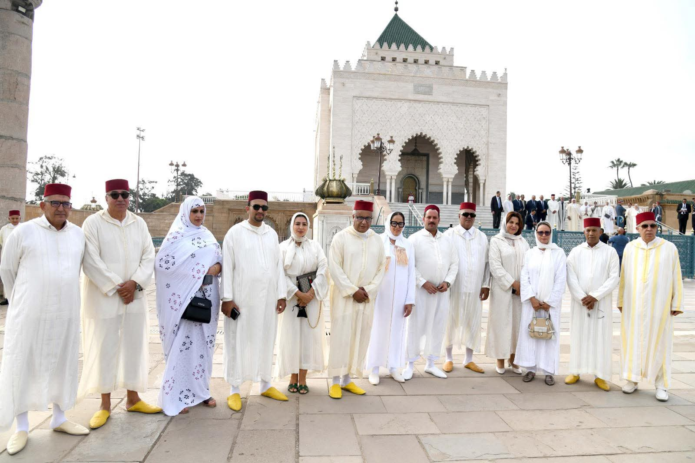
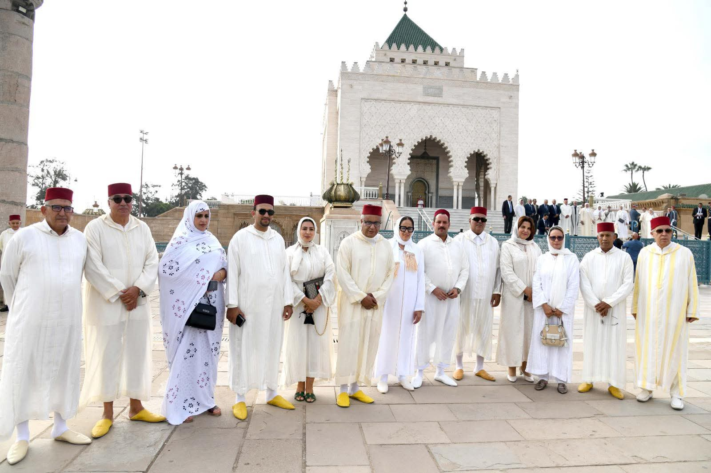

قام وفد عن حزب جبهة القوى الديمقراطية، يتقدمه الأمين العام للحزب، صباح يوم الخميس 9 ربيع الآخر 1447 هـ الموافق 2 أكتوبر 2025، بزيارة إلى ضريح محمد الخامس بالرباط، لقراءة الفاتحة والترحم على روحي جلالتي المغفور لهما الملك محمد الخامس، أب الأمة وباعث استقلال المغرب، والملك الحسن الثاني، موحد البلاد ومبدع المسيرة الخضراء المظفرة، وذلك بمناسبة الذكرى السابعة والعشرين لرحيل هذا الأخير.
وقد عبّر الأمين العام، في كلمة بالمناسبة، عن ما يكنّه مناضلو ومناضلات الحزب من تقدير وإجلال لمسار ملكين عظيمين، رسّخا دعائم الدولة المغربية الحديثة، وأسهما في بناء نهضتها وتعزيز إشعاعها الدولي. كما دعا بالرحمة والمغفرة لهما، وبأن يجعلهما الله تعالى في أعلى عليين مع النبيئين والصديقين والشهداء والصالحين.
وقد التُقطت بهذه المناسبة صور تؤرخ للحظة وفاء وعرفان لروحي فقيدي الأمة، وتجديد للعهد على مواصلة التعبئة وراء جلالة الملك محمد السادس، حفاظاً على الوحدة الوطنية وصيانةً لمكتسبات الوطن.